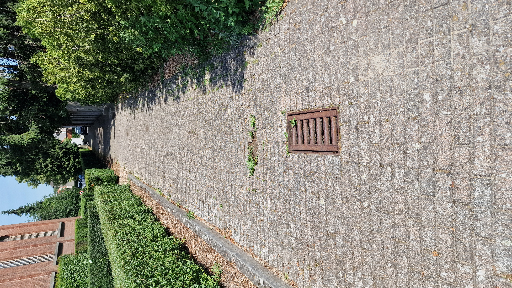
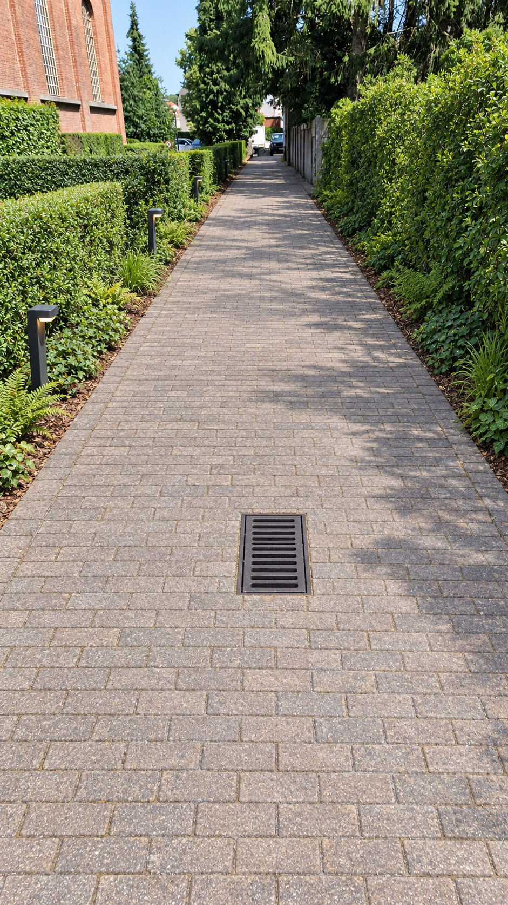
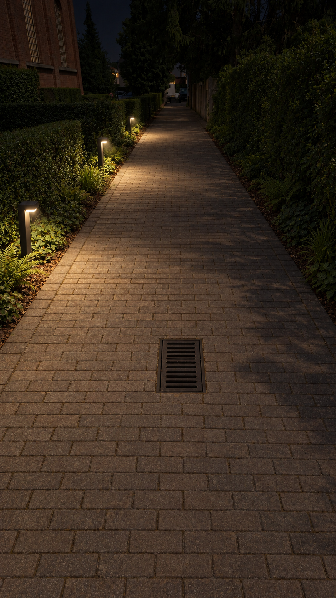
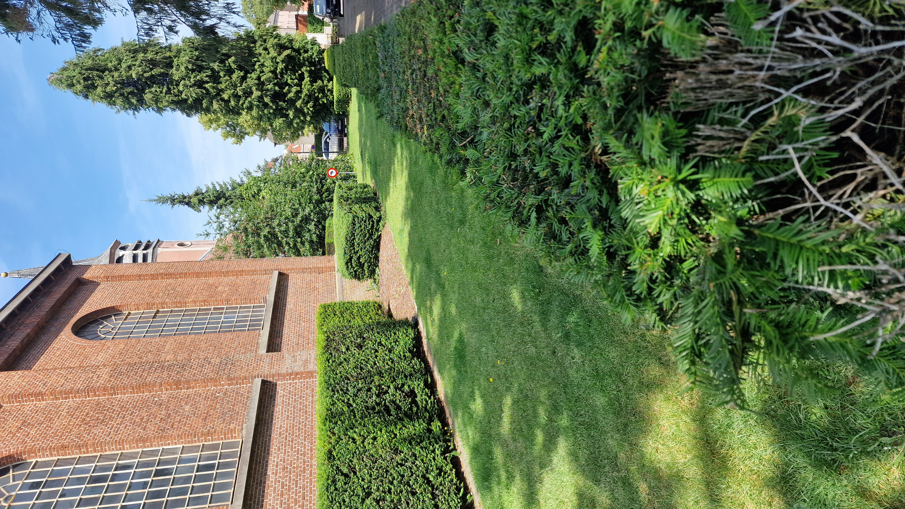
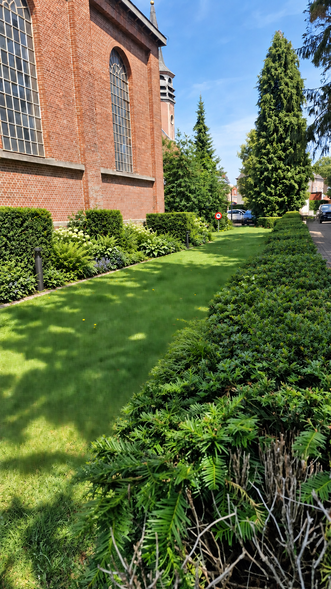
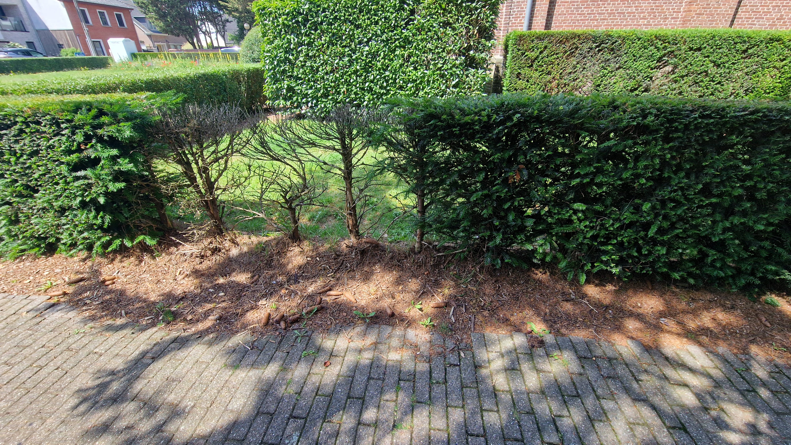
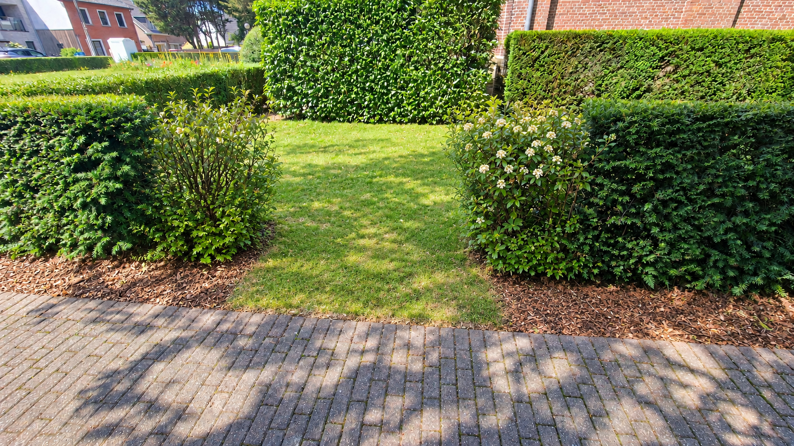
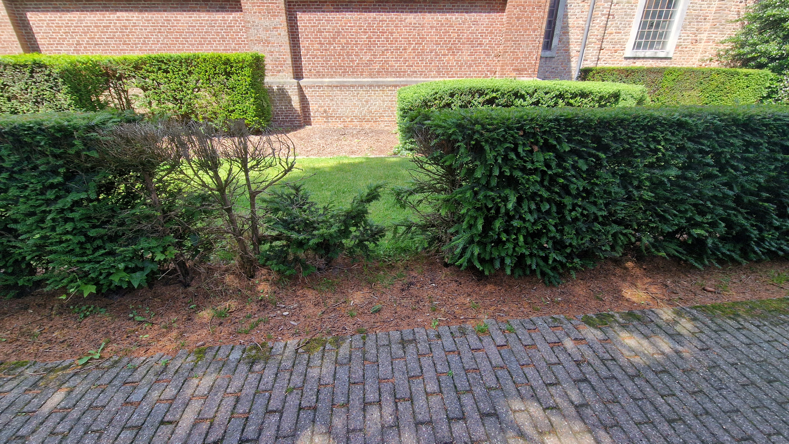
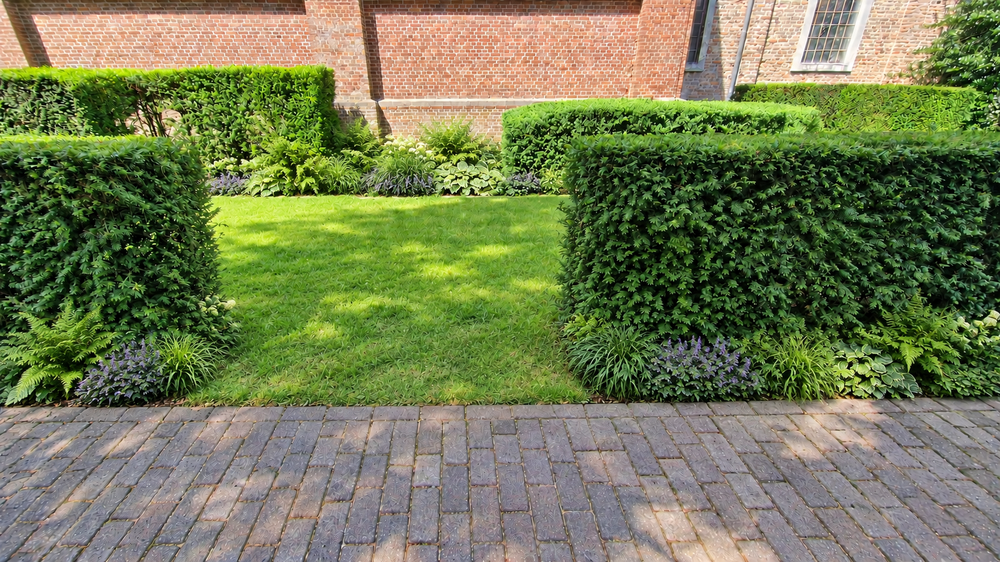
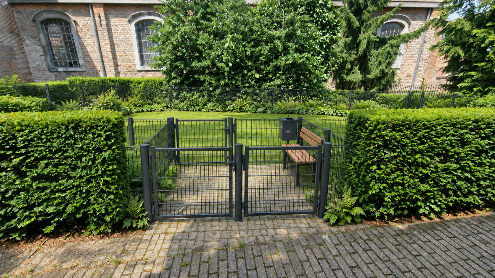

Het wandelpad blijft wandelpad
De volledige oostelijke route van circa 64 meter lang en 2,5 meter breed blijft behouden. Verzakkingen worden hersteld en kolken nagekeken.
DEELGEBIED 02 · OOST
Langs de oostkant verbinden we een goed begaanbaar pad met een natuurlijkere groene rand. Openingen in de beplanting maken de grasweide bereikbaar en geven zicht op de kerk.
Idee van een vrijwilliger · geen beslist planIk verzamel ideeën en reacties van buurtbewoners. Ik neem zelf geen eindbeslissingen over de inrichting, het budget of de uitvoering. Die liggen bij de bevoegde instanties en eigenaars.

HET VOORSTEL
De volledige oostelijke route van circa 64 meter lang en 2,5 meter breed blijft behouden. Verzakkingen worden hersteld en kolken nagekeken.
Dode struiken maken plaats voor open doorgangen naar het gras. Schaduwplanten vullen kale stroken aan, met behoud van privacy voor de buren.
We onderzoeken een compacte, omheinde hondenweide op het grasveld. Die komt er alleen als ruimte, eigendom, geluid en beheer het toelaten. Een veilige toegang en groene buffer horen bij dat onderzoek.

VOOR DE BUURT
De hondenweide is een mogelijkheid, geen vaststaand onderdeel. Ook eventuele sobere routeverlichting vraagt vooraf onderzoek.
HUIDIGE SITUATIE & VOORSTEL
Vergelijk de bestaande omgeving met de voorgestelde inrichting. De visualisaties zijn indicatief en tonen geen goedgekeurd uitvoeringsplan. Selecteer een beeld om het volledig te bekijken.








